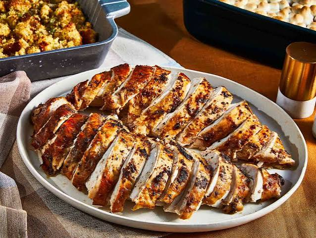

Thanksgiving comes with enough pressure; save yourself some money,
fridge space, and effort this year by roasting a delicious turkey-
breast! A turkey breast is generally sized to feed two to three people
with leftovers, so it's the perfect choice for a scaled-down celebration.
This oven-roasted turkey breast is slathered with an herb butter
both underneath and on top of the skin, yielding juicy, flavorful meat and a
crispy skin. Be sure to save the drippings for the accompanying turkey gravy!